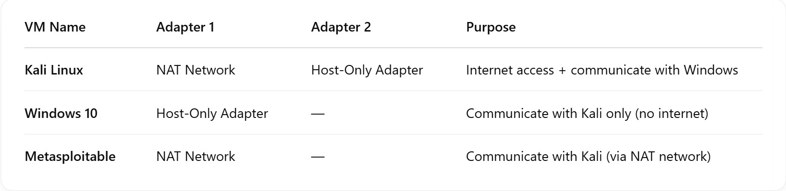

Mini SOC Lab
🔍 Objective:
The SOC Lab I created is designed to test, investigate and simulate real-word cyberattacks in a controlled environment. In this I will be exploiting a window 10 operating system, which acts as the victim machine, using a Reverse shell technique. The attack will be delivered through email phishing, combined with URL obfuscation, which once executed, will provide me with command line (CLI) access to the victim machine.
This access allows me to perform advanced post-exploitation techniques, which will be covered in part 2 of the SOC Lab, including:
- Privilege Escalation – Gaining high-level access on the victim machine.
- Lateral Movement – Moving across systems in the network.
- Persistence – Setting up backdoors to maintain access.
- Data Access – Retrieving sensitive files or credentials.
- Command Execution – Running malicious commands.
🧪 Lab Setup:

A diagram showing attacker/victim machines.
I downloaded and installed VirtualBox to create a virtual environment for my attack simulation, within the VirtualBox I set the operating systems using their ISO and image file.
- Kali Linux – It’s Linux distribution designed for penetration testing. In this setup it will be used to simulate the attacker machine.
- Windows 10 – It’s A widely-used operating system. In the setup it will serve as the target machine to mimic a real-world user environment.
- Metasploitable – It’s a tool designed for testing and practicing exploitation techniques.
Below are the officially download links for each component mentioned above:
- VirtualBox: – https://www.virtualbox.org/wiki/Downloads
- Kali Linux: – https://www.kali.org/get-kali/
- Windows 10: – https://www.microsoft.com/software-download/windows10
- Metasploitable 2: – https://sourceforge.net/projects/metasploitable/
After installing the virtual machines, I configured the network settings for each VM by enabling and adjusting the network adapters. The configuration details are illustrated in the image below.

For my vulnerable machine (Metasploitable), I needed to ensure that Kali Linux and Metasploitable could communication effectively within the virtual environment.
And to achieve this, I created a custom NAT network using the VirtualBox Network Manager.
I named the network "meta-lab", set the ipv4 prefix to 10.0.2.0/24 and enabled DHCP to allow automatic Ip addressing.
Next, I attached the "meta-lab" network to Adapter 1 of both Kali Linux and Metasploitable, enabling a communication between the two machines.
The final configuration is shown in the image below.
.jpg)
The image below shows the network interfaces of each virtual machine, including their adapter settings and assigned networks.
The next step was to verify network connectivity between the virtual machines. I ensured that:
– Kali Linux can ping Metaspoloitable, and Metaspoloitable can also ping Kali Linux, successfully.


– Kali Linux can ping Metaspoloitable, and Metaspoloitable can also ping Kali Linux, successfully.

The screenshots are taken from VirtualBox, to show the successful communication between the virtual machines.